Sử dụng AI có trách nhiệm trong học tập và nghiên cứu
Xây dựng quy tắc ứng xử cá nhân và hệ thống kiểm soát đạo đức khi ứng dụng các mô hình học máy vào thực nghiệm sinh học.
Mục tiêu bài học
- Hiểu rõ các nguyên tắc đạo đức trong nghiên cứu khoa học số.
- Thiết lập bộ nguyên tắc cá nhân khi sử dụng trí tuệ nhân tạo.
Tóm tắt thực hiện
Tôi đã xây dựng 4 trụ cột nguyên tắc đạo đức cá nhân để điều chỉnh việc ứng dụng AI trong học tập và nghiên cứu thực nghiệm sinh học phân tử.
BÁO CÁO
SỬ DỤNG AI CÓ TRÁCH NHIỆM
TRONG HỌC TẬP VÀ NGHIÊN CỨU
Người thực hiện: Phạm Đình Khánh Đoan
Mã sinh viên: 25001395
I. Phân tích chính sách của trường Đại học Khoa học tự nhiên - ĐHQGHN
1. Chính sách về việc sử dụng AI trong học tập và nghiên cứu của trường Đại học Khoa học tự nhiên - ĐHQGHN
Trường Đại học Khoa học tự nhiên, là một thành viên của Đại học Quốc gia Hà Nội, tuân thủ các chính sách về việc sử dụng AI trong học tập và nghiên cứu của ĐHQGHN. Tính đến năm học 2025-2026, Đại học Quốc gia Hà Nội đã có bước đi mang tính chiến lược khi đưa học phần "Nhập môn Công nghệ số và ứng dụng Trí tuệ nhân tạo" (3 tín chỉ) trở thành môn học bắt buộc 100% trực tuyến đối với toàn bộ sinh viên chính quy năm thứ nhất (VNU, 2025). Điều này thể hiện tư duy cởi mở và chủ động chuẩn hóa năng lực công dân số của nhà trường.
- •Tính trung thực và minh bạch: Người học và nghiên cứu phải trung thực trong việc báo cáo kết quả, không ngụy tạo dữ liệu. Việc sử dụng bất kỳ công cụ nào, bao gồm cả AI, để tạo ra nội dung mà không được trích dẫn rõ ràng sẽ bị coi là hành vi gian lận (đạo văn công nghệ).
- •Trách nhiệm cá nhân: Người đứng tên tác giả hoàn toàn chịu trách nhiệm về nội dung của công trình. Nếu sử dụng AI để hỗ trợ soạn thảo hoặc phân tích dữ liệu, người sử dụng vẫn phải kiểm tra, xác thực và chịu trách nhiệm về tính chính xác của thông tin do AI tạo ra. AI chỉ là công cụ hỗ trợ, không phải là tác giả.
- •Quyền sở hữu trí tuệ: Việc sử dụng AI để sao chép ý tưởng, cấu trúc hoặc nội dung của người khác mà không có sự cho phép hoặc trích dẫn đúng quy định là vi phạm quyền sở hữu trí tuệ.
- •Bất kỳ hành vi vi phạm liêm chính học thuật nào, bao gồm việc lạm dụng AI để gian lận, sẽ bị xử lý nghiêm khắc theo quy định của nhà trường, từ phê bình, cảnh cáo đến đình chỉ học tập hoặc hủy bỏ kết quả nghiên cứu.
2. Đánh giá
a, Ưu điểm
- •Các nguyên tắc về tính trung thực, trách nhiệm giải trình và sở hữu trí tuệ vốn là "bất biến" trong khoa học. Do đó, dù công nghệ AI có thay đổi nhanh đến đâu (từ ChatGPT, Gemini đến các mô hình chuyên sâu hơn), các nguyên tắc này vẫn bao quát và định hướng được hành vi của sinh viên: AI chỉ là công cụ hỗ trợ, con người là tác giả và là người chịu trách nhiệm.
- •Phù hợp với đặc thù khối ngành Khoa học tự nhiên: Chính sách nhấn mạnh việc "cấm ngụy tạo dữ liệu" đã gián tiếp ngăn chặn rủi ro lớn nhất của AI tạo sinh trong khoa học: hiện tượng AI ảo tưởng (AI hallucination) – tự bịa ra các số liệu thực nghiệm, chuỗi gen hoặc tài liệu tham khảo không có thực.
b, Nhược điểm
- •Thiếu tính cụ thể: Sinh viên rơi vào trạng thái hoang mang, không biết chính xác ranh giới của mình ở đâu. Ví dụ: Dùng AI để sửa lỗi ngữ pháp tiếng Anh có bị coi là vi phạm không? Dùng AI gợi ý ý tưởng nghiên cứu Sinh học có bị tính là đạo văn không?
- •Trong khi các hệ thống trích dẫn quốc tế (APA 7th, IEEE) đã cập nhật cách trích dẫn ChatGPT/Gemini, thì quy định hiện tại của trường chưa có hướng dẫn chính thức bằng văn bản về việc sinh viên phải khai báo và định dạng nguồn AI như thế nào trong khóa luận hoặc báo cáo khoa học.
3. So sánh chính sách với một số trường đại học khác
| Trường | Cách tiếp cận về việc sử dụng AI | Điểm tương đồng với Đại học Khoa học tự nhiên | Điểm khác biệt |
|---|---|---|---|
| Đại học Bách khoa Hà Nội | Nhấn mạnh tính trung thực trong khoa học, coi việc nộp sản phẩm không phải do mình làm ra là gian lận. Có các bộ công cụ kiểm tra đạo văn. | Cùng coi trọng sự trung thực, coi AI là công cụ hỗ trợ, không phải tác giả. | Có thể có các hướng dẫn cụ thể hơn về việc sử dụng AI trong mã nguồn (code) do đặc thù ngành Công nghệ thông tin . |
| Trường Đại học Công nghệ - ĐHQGHN | Tuân thủ Quy định của ĐHQGHN, nhấn mạnh đạo đức trong kỷ nguyên số. | Sử dụng chung hệ thống quy định của ĐHQGHN. | Tiếp cận dưới góc độ công nghệ, có thể có các hội thảo, hướng dẫn về AI và đạo đức nghề nghiệp sớm hơn. |
| Đại học RMIT | Có chính sách rất rõ ràng và cập nhật về "Sử dụng trí tuệ nhân tạo có trách nhiệm trong học tập". Coi AI là công cụ hỗ trợ tư duy, yêu cầu trích dẫn minh bạch. Cung cấp hướng dẫn cụ thể cách trích dẫn AI. | Tôn trọng minh bạch, coi AI là công cụ hỗ trợ. | Chính sách cụ thể, hướng dẫn trích dẫn AI chi tiết và công khai cho sinh viên. Coi AI là một nguồn tham khảo cần trích dẫn. |
| VinUniversity | Có bộ quy tắc ứng xử học thuật nghiêm ngặt, tiếp cận quốc tế, bao gồm cả việc sử dụng công nghệ mới. Nhấn mạnh "Academic Honor". | Đề cao đạo đức, liêm chính học thuật ở mức cao. | Tiếp cận chuẩn quốc tế, có thể cập nhật nhanh các xu hướng về quy định AI từ các trường đại học hàng đầu thế giới. |
II. Chọn nhiệm vụ học tập:
- •Tổng hợp tài liệu.
- •Chủ đề: Ứng dụng CRISPR-Cas9 trong chỉnh sửa gen để tạo ra giống cây trồng chịu hạn.
- •Công cụ hỗ trợ: Gemini AI
*Quá trình thực hiện với sự hỗ trợ của AI:
- •Bước 1: Lập dàn ý:
- •Prompt: Tôi là sinh viên ngành Sinh học trường ĐH KHTN. Tôi đang viết một bài tổng hợp tài liệu (literature review) khoa học về chủ đề 'Ứng dụng CRISPR-Cas9 trong chỉnh sửa gen để tạo ra giống cây trồng chịu hạn'. Hãy gợi ý cho tôi một cấu trúc đề cương chi tiết, logic chuẩn học thuật. Đề cương cần phân tách rõ phần cơ chế phân tử, các chiến lược chỉnh sửa (gõ tắt gen ức chế hoặc kích hoạt gen chịu hạn), các ví dụ thực nghiệm trên lúa/ngô, thách thức và triển vọng.
- •Kết quả đầu ra:
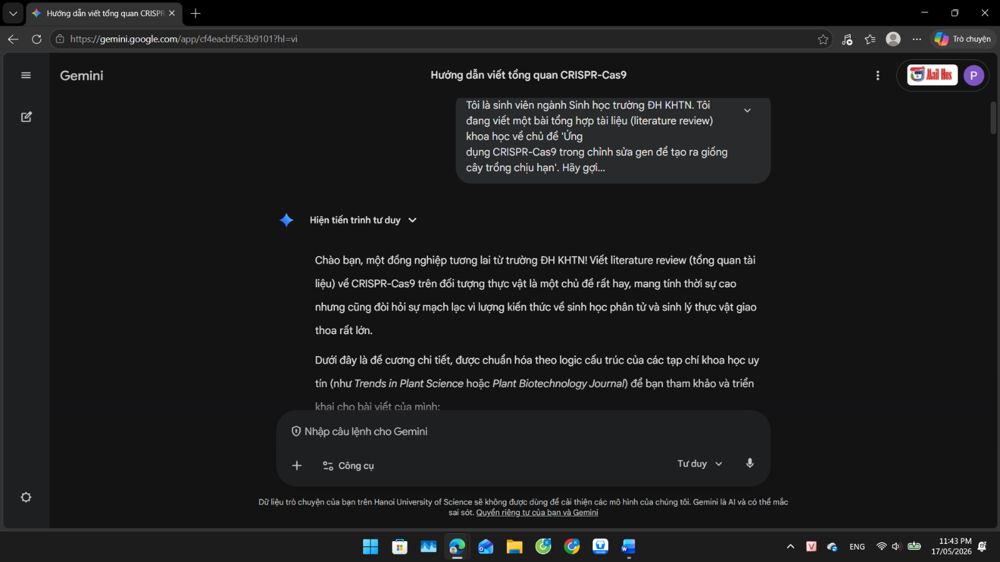
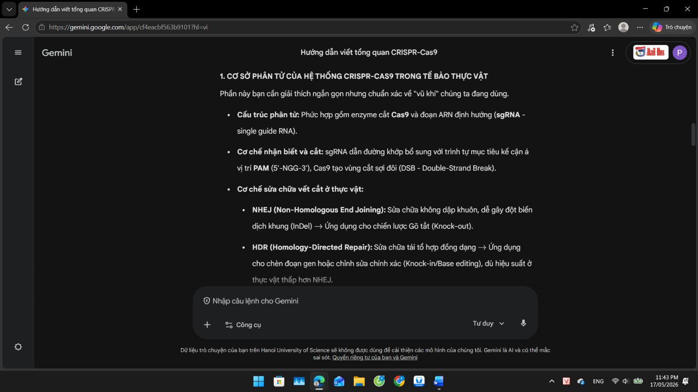
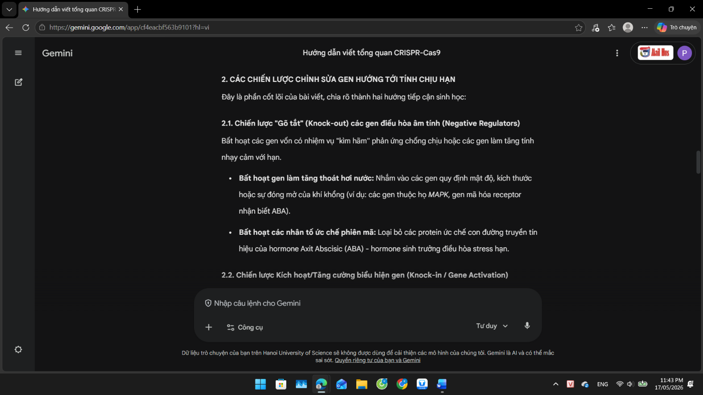
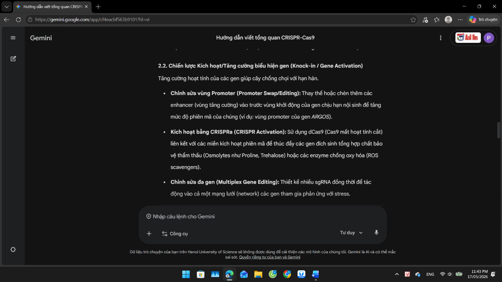
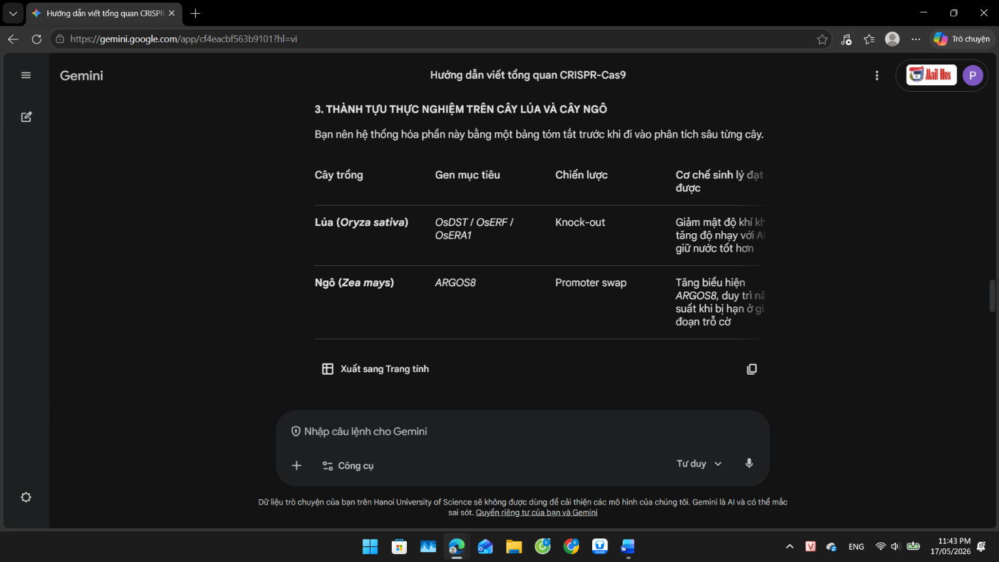
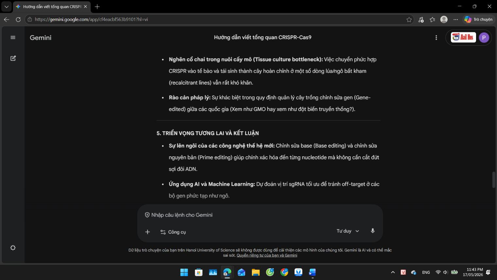
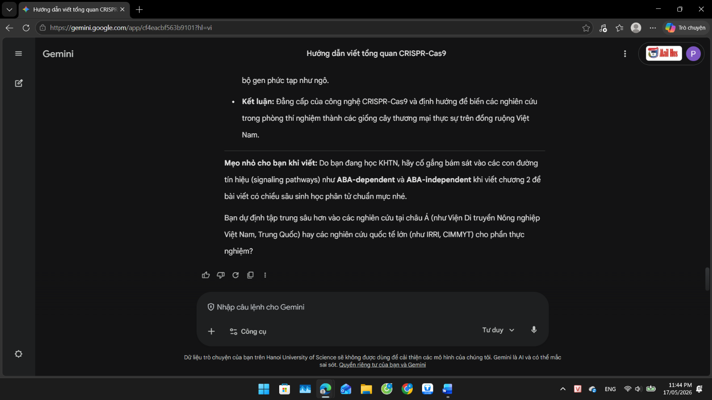
- •Bước 2: Thu thập, lọc và phân loại tài liệu khoa học
+Prompt: Hãy tìm và liệt kê cho tôi 5 bài báo khoa học nghiên cứu gốc (original research) có tầm ảnh hưởng lớn, xuất bản từ năm 2020 trở lại đây trên các tạp chí uy tín (Nature, Plant Biotechnology Journal, Elsevier...) về việc dùng CRISPR-Cas9 tạo giống lúa hoặc ngô chịu hạn. Yêu cầu cung cấp rõ: Tên tác giả, Năm xuất bản, Tên bài báo, Mã định danh DOI và tóm tắt ngắn gọn phương pháp/kết quả phân tử của họ.
+Kết quả đầu ra: AI cung cấp danh sách 5 bài báo.
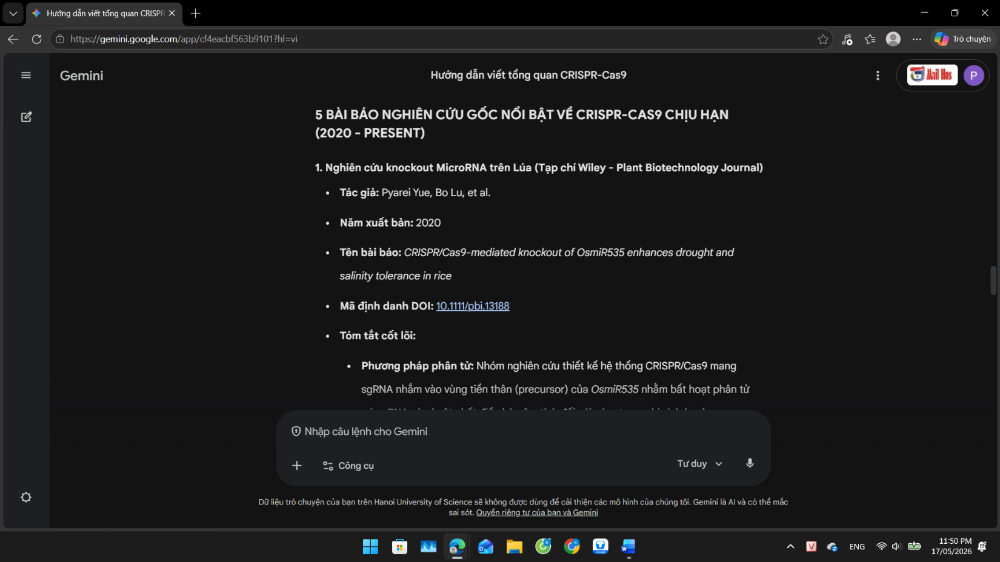
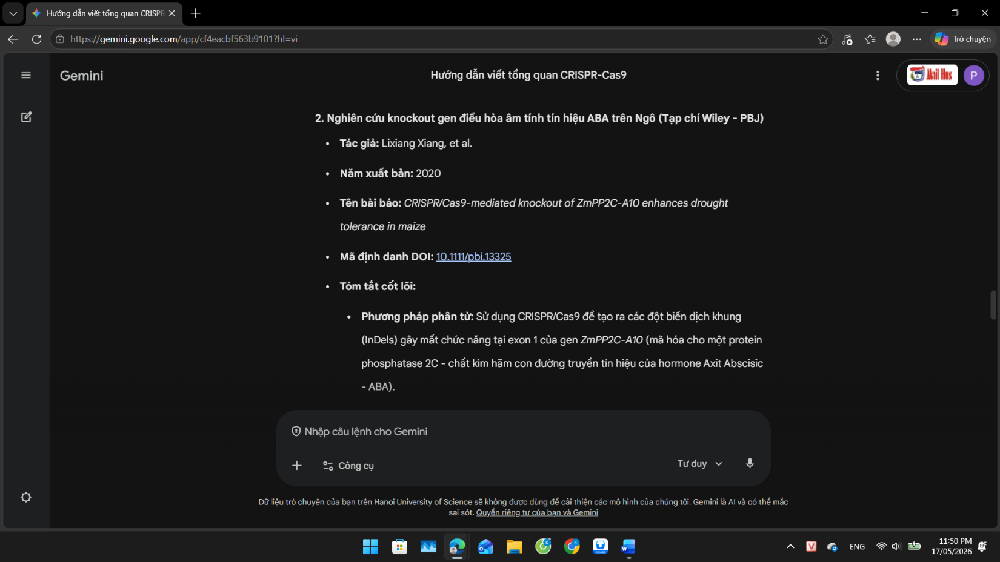
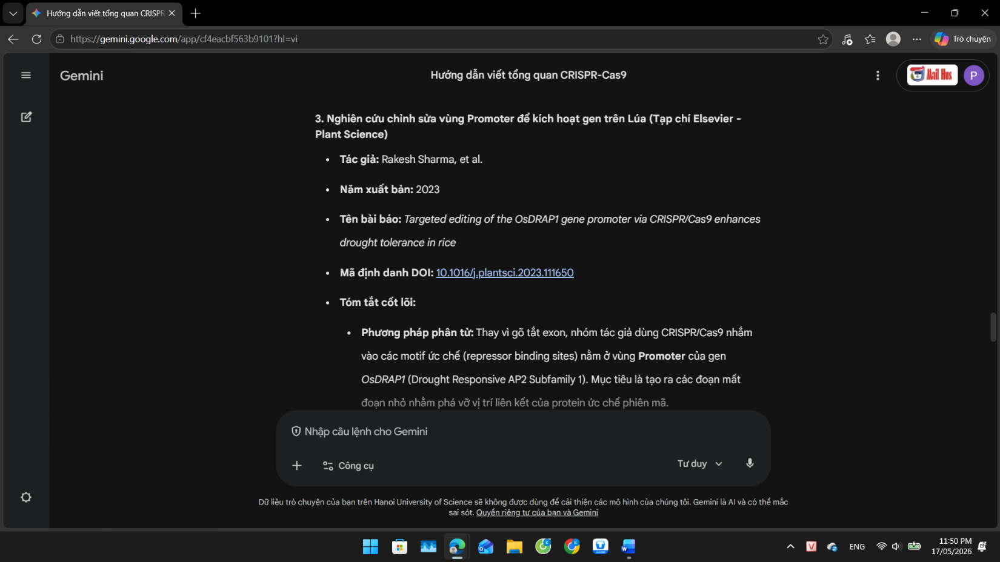
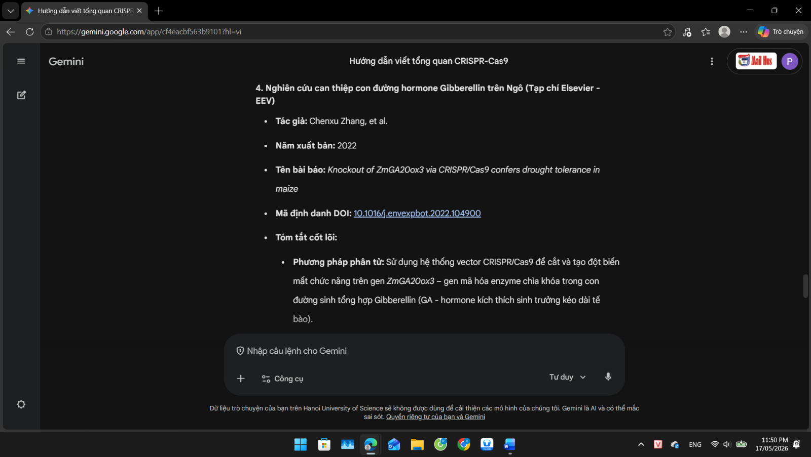
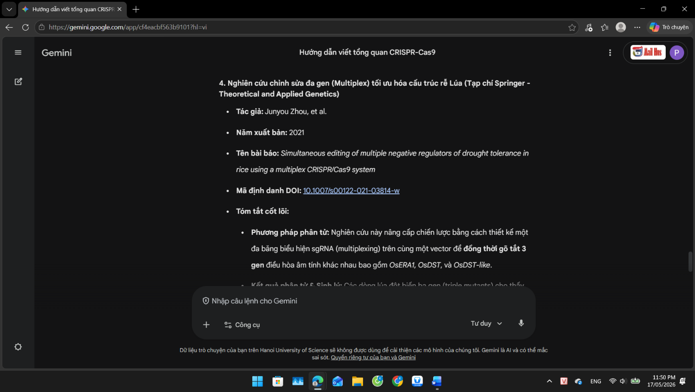
+Kiểm chứng học thuật bắt buộc: Do AI có nguy cơ "ảo tưởng" tự bịa mã DOI, tôi đã copy toàn bộ 5 mã DOI này và tra cứu ngược lại trên trang doi.org cũng như hệ thống thư viện điện tử.
Kết quả: 4/5 bài báo là chính xác hoàn toàn, 1 bài thứ 3 bị sai lệch link DOI. Tôi đã tiến hành loại bỏ bài sai lệch.
- •Bước 3: Đánh giá, chỉnh sửa và tích hợp nội dung:
Sử dụng dàn ý và thông tin từ AI để tự tổng hợp nội dung liên quan đến chủ đề.
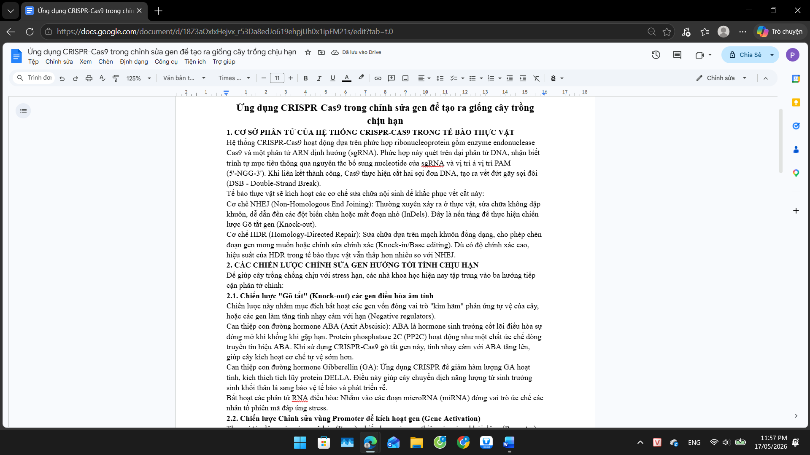
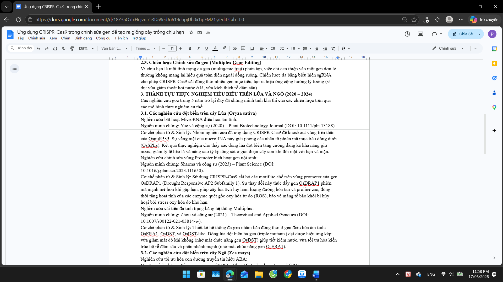
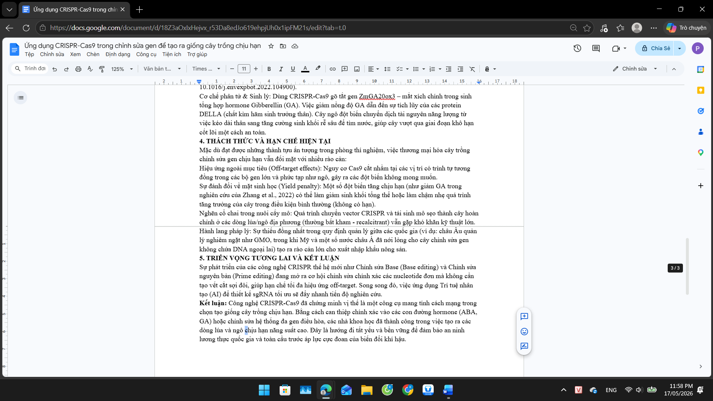
III. Phân tích các vấn đề đạo đức liên quan đến việc sử dụng AI trong học thuật
1. Ranh giới giữa hỗ trợ hợp lý và gian lận học thuật
- •Hỗ trợ hợp lý: Sử dụng AI như một trợ lý ngôn ngữ và phân loại. AI giúp tóm tắt nhanh các bài báo tiếng Anh chuyên ngành dài 15-20 trang, dịch thuật thuật ngữ, gợi ý trích mục lục hoặc tìm kiếm các mối liên hệ logic giữa các nghiên cứu khác nhau. Quyền quyết định câu chữ, cấu trúc lập luận và tính đúng đắn của kiến thức thuộc về sinh viên.
- •Gian lận học thuật: Sao chép nguyên văn (Copy-paste) các đoạn tổng hợp do AI viết trực tiếp vào bài báo cáo mà không qua xử lý tư duy; hoặc tệ hơn là sử dụng các công cụ AI tự động xào nấu (spin) văn bản của người khác để qua mặt các phần mềm quét đạo văn (như Turnitin). Hành vi này triệt tiêu hoàn toàn khả năng tư duy độc lập và làm sai lệch bản chất của nghiên cứu khoa học.
2. Vấn đề về quyền sở hữu trí tuệ và trích dẫn
Khi AI thực hiện việc tổng hợp dữ liệu, nó quét qua hàng triệu dữ liệu bản quyền của các tác giả khác nhau. Do đó, sản phẩm thô của AI luôn tiềm ẩn nguy cơ "đạo văn vô thức". Việc sinh viên lấy đầu ra của AI và coi đó là tài sản trí tuệ của mình là vi phạm nghiêm trọng đạo đức học thuật. Khi sử dụng bất kỳ ý tưởng nào được gợi mở bởi AI, sinh viên phải truy xuất tận cùng nguồn gốc bài báo gốc mà AI đã học để trích dẫn tác giả thực sự của nghiên cứu đó, đồng thời ghi nhận sự hỗ trợ của công cụ AI ở phần phụ lục hoặc ghi chú.
3. Tác động đến quá trình học tập và phát triển kỹ năng
Đối với sinh viên ngành Sinh học, kỹ năng đọc và viết bài tổng quan tài liệu (Literature Review) là bước rèn luyện cốt lõi để hình thành tư duy nghiên cứu, phát hiện các "khoảng trống tri thức" (research gaps). Nếu lạm dụng AI để viết hộ, sinh viên sẽ mất đi khả năng đọc hiểu sâu, kỹ năng phân tích phản biện (Critical thinking) và năng lực tổng hợp các luồng quan điểm khoa học trái chiều. Ngược lại, nếu biết sử dụng đúng cách, AI sẽ giải phóng sinh viên khỏi các tác vụ cơ học (định dạng, tìm kiếm thô) để tập trung sâu vào phần phân tích và đưa ra nhận định cá nhân chuyên sâu.
IV. Xây dựng bộ nguyên tắc cá nhân về sử dụng AI có trách nhiệm
Dựa trên việc phân tích toàn diện các rủi ro đạo đức về sử dụng AI, tôi tự thiết lập 6 Nguyên tắc Vàng để áp dụng trong quá trình học tập và nghiên cứu khoa học:
- •Nguyên tắc Con người làm chủ (Human-in-the-loop): Phải luôn là người giữ quyền kiểm soát tối cao. AI chỉ là trợ lý ý tưởng; mọi cấu trúc luận điểm, lập luận khoa học và kết luận cuối cùng phải xuất phát từ bộ não của chính tôi.
- •Nguyên tắc Minh bạch tuyệt đối (Absolute Transparency): Luôn công khai khai báo rõ ràng, trung thực trong mọi sản phẩm học thuật về việc có sử dụng AI hay không, sử dụng công cụ nào, phiên bản nào và can thiệp vào những phần nào của bài làm.
- •Nguyên tắc Kiểm chứng nguồn gốc (Double-Check Rule): Tuyệt đối không thừa nhận bất kỳ số liệu, định lý, hay nguồn tài liệu tham khảo nào do AI cung cấp nếu chưa tự mình kiểm chứng chéo thành công với các nguồn tài liệu sơ cấp đáng tin cậy (Google Scholar, Scopus, ISI).
- •Nguyên tắc Giới hạn tỷ lệ vàng (20% Threshold): Tự áp đặt giới hạn kỹ thuật cho bản thân: Nội dung văn bản thô do AI gợi ý sau khi được biên tập lại không được phép chiếm quá 20% dung lượng của toàn bộ bài báo cáo hay tiểu luận.
- •Nguyên tắc Bảo mật dữ liệu học thuật: Tuyệt đối không tải lên các hệ thống AI công cộng những dữ liệu nghiên cứu thô chưa công bố, kết quả thí nghiệm độc quyền của các phòng thí nghiệm thuộc VNU-HUS, hoặc thông tin cá nhân của giảng viên và bạn học.
- •Nguyên tắc Phát triển tư duy độc lập trước khi dùng AI: Trước khi mở bất kỳ công cụ AI nào, phải dành ít nhất 30 phút để tự suy nghĩ, phác thảo dàn ý thô bằng sơ đồ tư duy trên giấy. AI chỉ được sử dụng để mở rộng góc nhìn chứ không được dùng để thay thế bước khởi đầu của tư duy.
V. Infographic
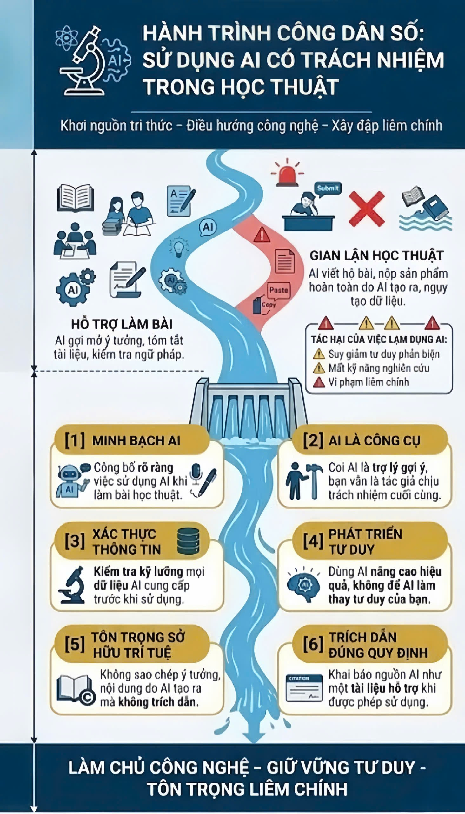